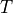
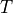

Example of CVA computation¶
This example is taken from the following website: http://www.pricederivatives.com/en/derivatives-cva-example-monte-carlo-python/. We’ve taken advantage of some functionalities provided by pyql to simplify the computations.
Here we’ll show an example of code for CVA calculation (credit valuation adjustment) with Python and Quantlib using a simple Monte-Carlo method for a portfolio consisting solely of a single interest rate swap. It’s easy to generalize this code to include more financial instruments.
CVA calculation algorithm¶
Simulate yield curve at future dates.
Calculate your derivatives portfolio NPV (net present value) at each time point for each scenario.
Calculate CVA as sum of Expected Exposure multiplied by probability of default at this interval
where
 is the Recovery (normally set to 40%), the expected exposure at time
is the Recovery (normally set to 40%), the expected exposure at time  , the survival probability density, and discount factor at time .
, the survival probability density, and discount factor at time .
Outline¶
In this simple example, we will use the Hull White model to generate future yield curves. In practice, many banks use some yield curve evolution models based on historical simulations. In the Hull White model, the short rate is distributed normally with known mean and variance.
For each point of time we will generate whole yield curve based on short rate. Then we will price our interest rate swap on each of these curves.
to approximate CVA we will use BASEL III formula for regulatory capital charge approximating default probability [or survival probability ] as exp(-ST/(1-R)) so we get:
where is discounted Expected exposure of portfolio.
Hull-White model for future yield curve simulations¶
the model is given by dynamics:
In the Hull White model, the short rate is distributed normally with mean and variance given by
where and is the instantaneous forward rate at time as seen at time 0. The calculations will not depend on . To generate the future values of , we use the simulate_process function which is a convenience function provided in the simulate module of pyql. After getting a matrix of all
for all draws and time points, we will construct a yield curve for each using Hull White discount factors at each future date.
for each future time point  ,  being the maturity.
,  being the maturity.
also we’ll output some generated yield curves.
[36]:
from quantlib.settings import Settings
from quantlib.time.api import (Date, Actual360, TARGET, NoFrequency, Period,
Years, Schedule, ModifiedFollowing, Following, Rule)
from quantlib.termstructures.yields.api import DiscountCurve
todaysDate = Date(26, 12, 2013);
Settings().evaluation_date = todaysDate;
crvTodaydates = [Date(26, 12, 2013),
Date(30, 6, 2014),
Date(30, 7, 2014),
Date(29, 8, 2014),
Date(30, 9, 2014),
Date(30, 10, 2014),
Date(28, 11, 2014),
Date(30, 12, 2014),
Date(30, 1, 2015),
Date(27, 2, 2015),
Date(30, 3, 2015),
Date(30, 4, 2015),
Date(29, 5, 2015),
Date(30, 6, 2015),
Date(30, 12, 2015),
Date(30, 12, 2016),
Date(29, 12, 2017),
Date(31, 12, 2018),
Date(30, 12, 2019),
Date(30, 12, 2020),
Date(30, 12, 2021),
Date(30, 12, 2022),
Date(29, 12, 2023),
Date(30, 12, 2024),
Date(30, 12, 2025),
Date(29, 12, 2028),
Date(30, 12, 2033),
Date(30, 12, 2038),
Date(30, 12, 2043),
Date(30, 12, 2048),
Date(30, 12, 2053),
Date(30, 12, 2058),
Date(31, 12, 2063)]
crvTodaydf=[1.0,
0.998022,
0.99771,
0.99739,
0.997017,
0.996671,
0.996337,
0.995921,
0.995522,
0.995157,
0.994706,
0.994248,
0.993805,
0.993285,
0.989614,
0.978541,
0.961973,
0.940868,
0.916831,
0.890805,
0.863413,
0.834987,
0.807111,
0.778332,
0.750525,
0.674707,
0.575192,
0.501258,
0.44131,
0.384733,
0.340425,
0.294694,
0.260792
]
crvToday = DiscountCurve(crvTodaydates, crvTodaydf, Actual360(), TARGET())
[37]:
import numpy as np
months = range(3, 12 * 5 + 1, 3)
sPeriods = ["{}M".format(month) for month in months]
print(sPeriods)
Dates = [todaysDate] + [todaysDate + Period(s) for s in sPeriods]
T = np.array([Actual360().year_fraction(todaysDate, d) for d in Dates])
['3M', '6M', '9M', '12M', '15M', '18M', '21M', '24M', '27M', '30M', '33M', '36M', '39M', '42M', '45M', '48M', '51M', '54M', '57M', '60M']
[38]:
from matplotlib import pyplot as plt
import matplotlib
matplotlib.rcParams['figure.figsize'] = (15.0, 7.0)
from quantlib.processes.api import HullWhiteProcess
from quantlib.sim.simulate import simulate_process
from quantlib.time_grid import TimeGrid
Nsim = 1000
#parameters calibrated with Quantlib to coterminal swaptions on 26/dec/2013
a = 0.376739
sigma = 0.0209835
hw = HullWhiteProcess(crvToday, a, sigma)
grid = TimeGrid.from_vector(T)
rmat = simulate_process(hw, Nsim, grid, 1, antithetic=False)
dT = np.diff(T)
#check that bond prices match the original discount factors
bonds = np.empty_like(rmat)
bonds[1:] = np.exp(-(rmat[1:] * dT[:,None]).cumsum(axis=0))
bonds[0] = 1
bonds_mean = np.mean(bonds, axis=1)
fig, ax = plt.subplots(figsize=(8, 5), layout='constrained')
ax.plot(T, bonds_mean, label="simulated bond prices")
ax.plot(T, [crvToday.discount(t) for t in T], label="discount factors")
ax.set_xlabel("T")
ax.legend()
fig
[38]:
[39]:
from quantlib.models.shortrate.onefactormodels.hullwhite import HullWhite
start_date = Date(26, 12, 2013);
hw_model = HullWhite(crvToday, a, sigma)
crvMat = np.empty((len(T), Nsim), dtype='object')
crvMat[0] = crvToday
for i in range(1, len(T)):
crvDates = [Dates[i] + Period(k, Years) for k in range(21)]
crv_row = []
for n in range(Nsim):
rt = rmat[i, n]
crvDiscounts = [hw_model.discount_bound(T[i], T[i] + k, rt) for k in np.arange(21.)]
crvMat[i, n] = DiscountCurve(crvDates, crvDiscounts, Actual360(), TARGET())
bondT = np.zeros_like(rmat)
for n in range(Nsim):
for i in range(len(T)):
bondT[i,n] = bonds[i,n] * crvMat[i,n].discount(19 - T[i])
bondTmean = np.mean(bondT, axis=1)
np.set_printoptions(precision=4, suppress=True)
print('bondTmean-Terminal bond\n', bondTmean - crvToday.discount(19.))
bondTmean-Terminal bond
[0. 0.0056 0.0053 0.0048 0.0046 0.0056 0.0058 0.0065 0.0061 0.0057
0.0053 0.0056 0.0047 0.0048 0.004 0.0041 0.004 0.0036 0.0042 0.0034
0.004 ]
[47]:
from quantlib.compounding import Continuous
fig, ax = plt.subplots(figsize=(8, 5))
ax.plot(range(10),
[crvMat[0,0].forward_rate(t, t, compounding=Continuous, frequency=NoFrequency).rate
for t in np.arange(10.)])
for i in range(min(Nsim, 10)):
ax.plot(range(10), [crvMat[i,1].forward_rate(t, t,
compounding=Continuous, frequency=NoFrequency).rate
for t in np.arange(10.)])
ax.set_title('generated yield curves')
fig
[47]:
[41]:
from quantlib.indexes.api import Euribor6M
from quantlib.instruments.api import VanillaSwap, Receiver
from quantlib.pricingengines.swap import DiscountingSwapEngine
from quantlib.termstructures.yields.api import YieldTermStructure
#indexes definition
forecast_term_structure = YieldTermStructure()
index = Euribor6M(forecast_term_structure)
rmean = [hw.expectation(0., hw.x0, t) for t in T]
# we add a fixing every 6 months
for i in range(0, len(Dates), 2):
index.add_fixing(index.fixing_date(Dates[i]), rmean[i])
[42]:
#swap 1 definition
maturity = Date(26, 12, 2018)
fixed_schedule = Schedule.from_rule(start_date, maturity, Period("6M"), TARGET(),
ModifiedFollowing, ModifiedFollowing, Rule.Forward,
False)
floating_schedule = Schedule.from_rule(start_date, maturity, Period("6M"),
TARGET(), ModifiedFollowing,
ModifiedFollowing, Rule.Forward, False)
swap1 = VanillaSwap(Receiver, 10_000_000, fixed_schedule, 0.02, Actual360(),
floating_schedule, index, 0, Actual360()) #0.01215
[43]:
npvMat = np.empty((len(T), Nsim))
discount_term_structure = YieldTermStructure()
swapEngine = DiscountingSwapEngine(discount_term_structure)
npvMat = np.empty((len(T), Nsim))
swap1.set_pricing_engine(swapEngine)
for i, d in enumerate(Dates):
Settings().evaluation_date = d
for n in range(Nsim):
crv = crvMat[i, n]
discount_term_structure.link_to(crv)
forecast_term_structure.link_to(crv)
npvMat[i, n] = swap1.npv
[44]:
npv = npvMat[0,0]
#replace negative values with 0
npvMat[npvMat<0] = 0
EE = np.mean(npvMat, axis=1)
print('\nEE:\n', EE)
#print '\nrmat:\n',rmat
print('\nrmean:\n', rmean)
#print '\nrstd:\n',rstd
#print '\n95% are in \n',zip(rmean-2*rstd,rmean+2*rstd)
EE:
[401670.1158 418836.1352 340293.5483 350128.0023 355742.385 301135.2662
235679.9031 249760.1162 243312.1597 199152.445 174698.3439 144657.1733
130173.2957 111075.2397 59332.7639 64612.5595 43032.7119 35243.9918
0. 0. 0. ]
rmean:
[0.0038321783708768938, 0.0038447104458097666, 0.003878829192934586, 0.004304415296142585, 0.004854534792846587, 0.005486708976510404, 0.00618266474586651, 0.007652760916036794, 0.007726527486934385, 0.011583314187371059, 0.011655179426606066, 0.011724510502370677, 0.011790125103332274, 0.01767265729120667, 0.017732265414519513, 0.01778829449949869, 0.017840190647180572, 0.0227598814403213, 0.02280548353169784, 0.022847781363155784, 0.022886514765800076]
[45]:
# We use 5% for the credit spread and 40% for the recovery
from math import exp
S = 0.05
R = 0.4
r = 0
for i in range(len(T)-1):
r += 0.5 * crvToday.discount(T[i+1]) * (EE[i] + EE[i+1]) * (exp(-S*T[i]/(1.0-R)) -exp(-S*T[i+1]/(1.0-R)))
CVA = (1. - R) * r
print("\nnpv=", npv)
print("\nCVA=", CVA)
npv= 401670.1157927497
CVA= 40722.15743027281
[46]:
fig, ax = plt.subplots(figsize=(8, 5))
ax.plot(T, EE)
ax.set_xlabel("Time in years")
ax.set_title('Expected Exposure')
fig
#plot(T,np.mean(rmat,axis=0))
#plot(T,rmean)
#plot(T,[npvMat[0,0]]*len(T))
[46]: